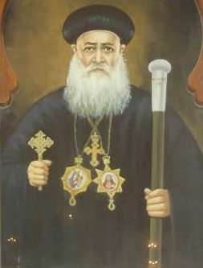

| الترتيب الكنسي: | البطريرك رقم 114 |
| فترة الرعاية: | من 1944 م إلى 1945 م |
| مدة الجلوس: | سنة واحدة و6 أشهر |
| المقر البابوي: | الكاتدرائية المرقسية بالأزبكية |
| مكان الدفن: | الكاتدرائية المرقسية بالأزبكية - القاهرة |
ولد في مدينة المحلة الكبرى، وترهب في دير القديس أنطونيوس الكبير باسم الراهب مكاريوس الأنطوني. رُسم مطراناً لأسيوط وهو في سن الرابعة والعشرين من عمره، وتولى إدارة شؤونها بحكمة وهدوء قبل أن يُنتخب للكرسي البابوي عام 1944 م. تميز بورعه الشديد، وزهده، وخطه العربي والقبطي البديع.